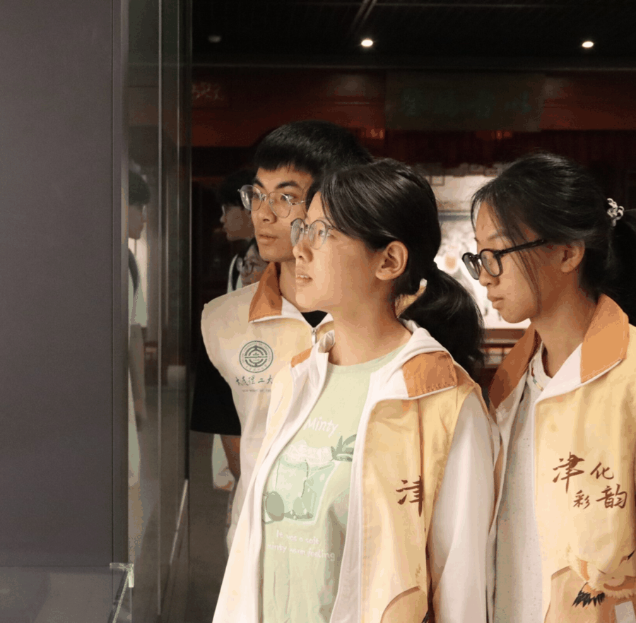
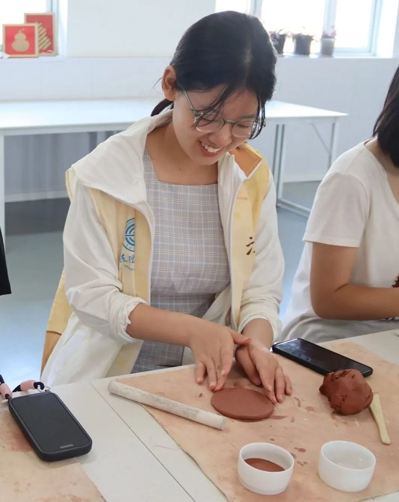
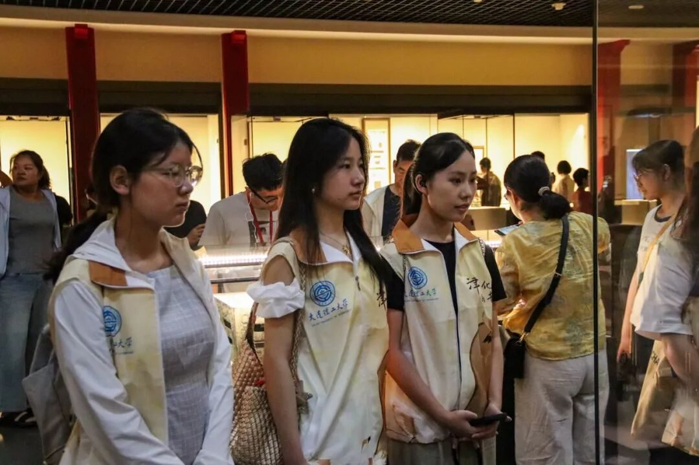

此次天津非遗之旅
是一场从“看见”到“触摸”
从旁观到参与的深度文化体验
让我对非遗的传承与生命力
有了立体而鲜活的认知

漫步天津，无论是古文化街市民的感慨，还是非遗传承人的热忱，都让我感受到非遗在扎根于市井烟火的同时，也面临着与时代对接的挑战。而博物馆与工坊的行程，则串联起文化的不同切面：天津博物馆的文物如历史的“年轮”，勾勒出城市发展脉络，承载着中华文化的厚重；民俗博物馆的展品带着生活温度，让抽象的“民俗”变得亲切可感，诉说着天津人的乐观通透。
亲手参与非遗创作的过程，更让我体会到匠心的重量。在王氏泥塑工坊捏制年兽，从揉泥到塑形，每一步都需细致专注，指尖的温度赋予作品独特意义；杨柳青文化馆里绘制“连年有余”年画，描线、刻版、敷色的讲究，让我明白非遗不是博物馆里的标本，而是能传递祝福的生命载体；面塑体验中，张亚杰老师灵巧的小哪吒，反衬出技艺背后反复磨合的耐心与心意；葫芦烙画时对火候与力道的拿捏，让我触摸到前人智慧的温度。

探访“风筝魏”工作室，更让我读懂了传承的力量。繁杂的制作工序、独特的折叠技艺，以及风筝走出国门的故事，展现出传统手工艺跨越国界的魅力。这些经历让我深刻理解：传承藏在文物的纹路里、泥塑的温度中，在每一个愿意走近、感受、动手的瞬间。保护非遗，正是要让更多人成为参与者，让沉淀着岁月智慧的技艺，既能在老街巷弄里被念叨，也能在新的指尖上绽放光彩，乘着时代的风轻盈飞翔。

这趟旅程如一幅缓缓铺展的年画，在市井烟火与匠心传承中晕染出别样温度。那些亲手制作的作品、亲眼见证的技艺、亲耳聆听的故事，都带着独特印记，让“传承”二字从抽象概念变为鲜活的生命体验，深深烙印在我的记忆里！
来源 | 行者无疆实践团
图片 | 行者无疆实践团
文字 | 袁婉若
编辑 | 姜骅洲
审核 | 张瑶琪 李凌志 杩健辉
责编 | 邹靓靓 周 亮